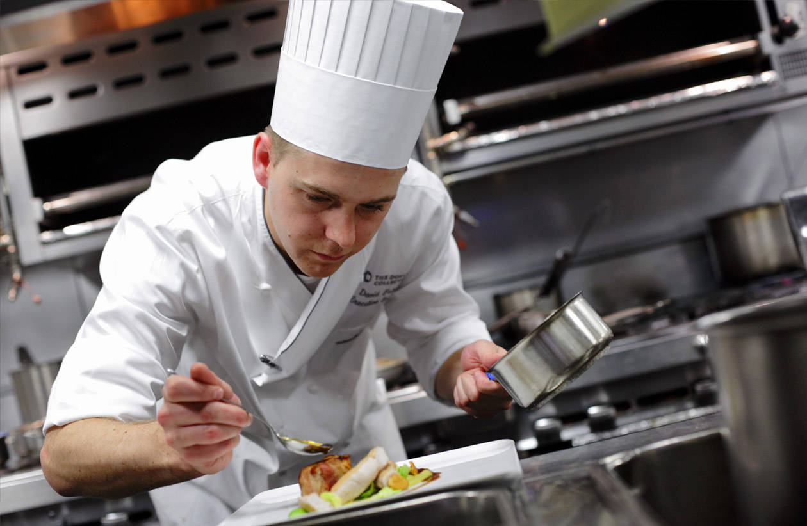

Meet the Chefs
Chef GordanScottish by birth, UK chef Gordon Ramsay was brought up in Stratford-upon-Avon, England, and initially aspired to be a professional footballer. However, when an injury prematurely put an end to any hopes of a promising career on the pitch, Ramsay went back to college to complete a course in hotel management. His dedication and natural talent led him to train with some of the world’s leading chefs, including Albert Roux and Marco Pierre White in London, and Guy Savoy and Joël Robuchon in France. |

|
Chef GuyChef Guy passion for cooking emerged at the tender age of 15 and was unstoppable. He embarked on an appreticeship and training with chocolate-maker Louis Marchand, the Freres Troisgros, Lasserre, at the Lion d’Or in Geneva, the Oasis in a Napoule. In 1987, after having spent seven years in the kitchen of Claude Verge, La Barriere de Clichy, chef Savoy opened his restaurant Guy Savoy. Since, he has collected a plethora of accolades, deeming him one of the most respected and skilled chefs. |
 |
Chef jordanEmmy Award-winning and New York Times best-selling author Giada De Laurentiis has become a household name. With an impressive background of culinary training and a unique, personable charm, she is a globally revered celebrity chef who continues to prove her skill |

|